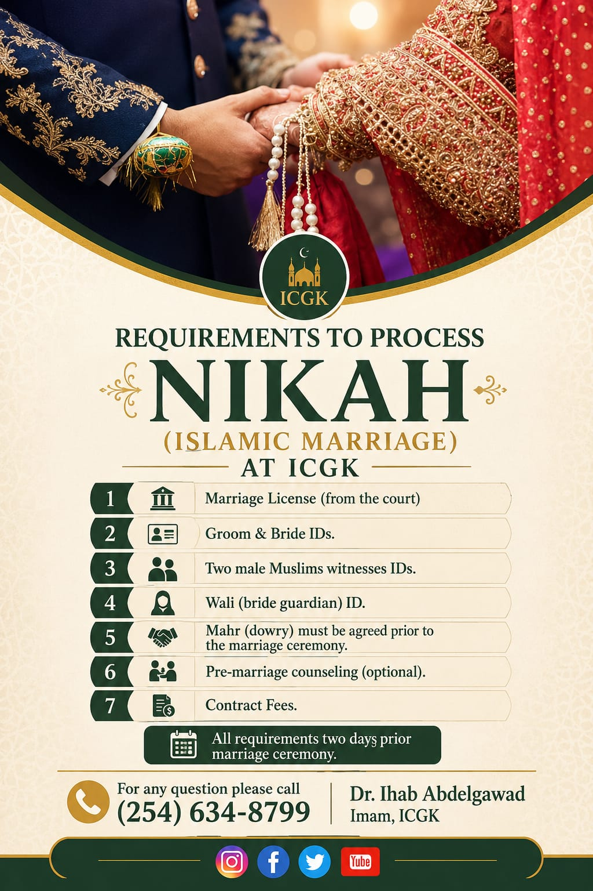

Life Events
Nikāḥ — Marriage
Marriage in Islam is a sacred covenant and half of one's faith. It is a source of love, mercy, and tranquility between spouses.
"And among His signs is that He created for you spouses… and placed between you love and mercy."— Qur'an 30:21
What a nikāḥ involves
- Consent of both the bride and groom — freely given.
- A walī (guardian) for the bride.
- Two witnesses.
- A mahr — a gift from the groom to the bride, which is her right.
- The offer and acceptance, often followed by a short khuṭbah and du'ā.
A walīmah (wedding feast) afterward is a Sunnah. ICGK offers nikāḥ and matrimonial services — see Programs.
Requirements to process a nikāḥ at ICGK

Janāzah — Funeral & Burial
Caring for the deceased is a communal obligation (farḍ kifāyah) and a final act of love. The process is dignified, simple, and swift.
- Ghusl — the body is gently washed.
- Kafan — wrapped in simple white shrouds.
- Ṣalāt al-Janāzah — the funeral prayer, performed standing, by the community.
- Burial — laid in the grave on the right side, facing the qiblah, as soon as possible.
"Hasten with the funeral…"— Sahih al-Bukhari
Mourning is dignified and patient: we say innā lillāhi wa innā ilayhi rājiʿūn ("to Allah we belong and to Him we return"). ICGK provides janāzah and burial assistance for families in need — please reach out right away in a time of loss.
Aqīqah — Welcoming a Newborn
The birth of a child is a blessing met with gratitude and Sunnah practices:
- Adhān may be softly recited in the newborn's ear.
- Taḥnīk — softening a date and touching it to the baby's palate.
- Naming the child with a good name, ideally by the 7th day.
- Aqīqah — a sacrifice on the 7th day (traditionally two sheep for a boy, one for a girl), with the meat shared and given in charity.
- Shaving the head and giving the weight of the hair in silver as charity.
- Khitān (circumcision) for boys, a practice of the prophets.
We're Here for Your Family
From joyful beginnings to times of grief, the masjid stands with you. ICGK offers nikāḥ services, janāzah and burial support, and guidance for welcoming a newborn — along with counseling for families.
Get in Touch
For any of these services, or guidance on the proper steps, please reach out — especially in a bereavement, when we can help quickly.
May Allah bless your marriages, have mercy on your departed, and make your children a comfort to your eyes. Āmīn.
For nikāḥ, janāzah, and family services, reach out to your local masjid • icgk.org